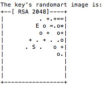
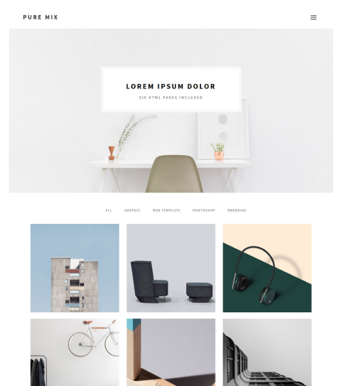
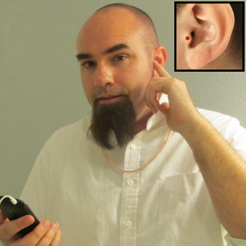
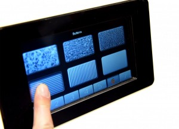
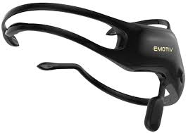
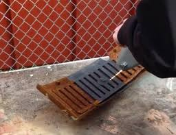

None
idk yet
For our first week we've been tasked to do two things:
Ultimately the way things went for me is it was going to be easier to start planning with the architecture for the site in place, so I started with the website, and will fill in plans as they come.
We learned the basics of how we're going to be able to host our site in resitation, and started by downloading Xcode for my mac, allowing me to use Git in my terminal. Git is a version control system, which I've heard about from friends doing CS stuff, but never really understood how it worked, outside of what it did. Understanding the push/pull system is imparative to using it, and hopefully I've got it down as this course goes on! We're using a system of GitLabs which is a fancier'?' version of git, but all that really matters is that each member of fabacademy will be hooked up to fabacademy through our SSH keys and will pull and push our site when we update it with new information. Below is an example of a little 'randomart' image created using the data in any machine's own private SSH key
Once we've built that connection, it's as simple as adding your website to your local repository and pushing it to the FabAcademy servers.
Now I'm not the most familiar when it comes to writing HTML, and we had a few methods to choose from regarding how we manage our content. Some will choose simple text editors like (g)Vim, Some will go with whole content managing platforms like wordpress or drupal, and I (for starters at least) am going to use Brackets, and also I may start with a little help. I found a HTML5 template which has a couple prebuilt javascript files that come with it just to stylize the page, and for this week I'm just looking into the files and editing what I need to to create a template for the future.
Things may look similar now, but lets hope with time, this page may seem quite a bit different.
This is a tough one.
In past projects I've allowed play and exploration of existing technologies to afford for the devising of a piece, or product. Weather its working with a material, sensor, or machine, using techniques like play and bricalage you can discover uses and affordances of the object outside of there intented or traditional usages. A nail for example may be intended for holding something in place with applied pressure, but with a different applied pressure, it can be used as a mark making tool, scratching and drawing on soft surfaces. This isn't exactly a pitch, but allow it to flavor your palette in regards to my seemingly incomplete ideas for the final project to come.
I've essentially got two ideas right now, one of which is based pretty physically currently, with a little development conceptually, mostly regarding human cybernetic organism (aka cyborgs). The second idea I don't yet have an idea of how it might manifest physically, but conseptually I've found it prevoking for some time, and this may be the oportunity for me to take a deeper dive into the subject.
I've been paying attention to the work of Neil Harbisson and a few other artists in the Cyborg Foundation. His work has a few facets; it's visual, its political, and its playfully scientific. Cybernetics at their least allow for machines to act autonomously (certainly no small feat), but when used in congress with an organism, for some reason seem to create a union that feels elevated beyond 'man or machine' alone. Human's owe some of our biological success to our ability to interpret the sensory information around us with some degree of accurasy, and we do even better when we know what to do with that information. Cyborg artists seem to be recreating that process for themselves, and who are we to say they're not developing entirely new planes of conciousness.
I've come across a few tools and electronics that never ceise to amaze me in the shop how they work, or what they can do, but any work I've done seems to be limited to the work outside myself. I'd like to see what it might look like to begin encorperating myself into my work! Potentially using these things:
Transducers in essense translate some form of energy to another, and have been used in 'bone conducting speakers' before. I'd hope to see and explore the extent to which they can be used on the body, and what information might be useful to be passed into the body sonically, or vibationally.
I learned what haptic feedback was from my new videogame controller, which had it's analog stick replaced with a touchpad and some vibrators. It's incredible how quick we can fool ourselves into believing one sensory input is another. Using small motors, vibrators, pistons, etc. on a user, It'd be wild to think all the things you could teach yourself to feel
EEG readers have become more popular of late, (as has everything) because of the sharp decline in price. Using this information as an input rather than an output may still be interesting, and then the final project could exist in the form of a localised output to be interpreted by the user. reflecting the usage of their own brain.
That's about all I have regarding the cyborg element as of now, but the combo will be considered more carefully in the coming weeks.
It's late, so I'll keep this brief. It boggles my mind to think about the greatness of human thought and development through time. When you learn the complexities of human thought and development from thousands of years ago, sometimes it becomes incredibly hard to place modern problems into context. The reciprical thought, I wasn't even thinking about, but after some brainstorming I began to realize it's equally evockotive to consider where our current political and economical climate exists in relationship to the past. Even moreso in this class, is there any connections we should be considering politically when comparing the philophies (politically and maker-related) of the Fab movement, and the rust belt. Would it be worth anything to attempt to visually this information in a physical space using the very materials and principles that seperate the two spaces.
Looks Like I'll have some thinking to do during this next week...